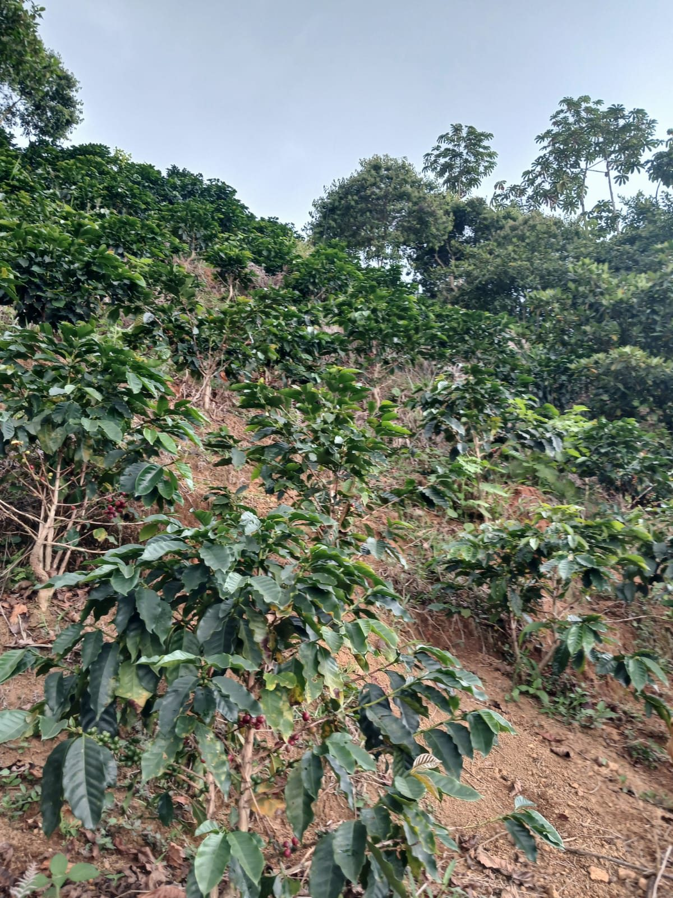
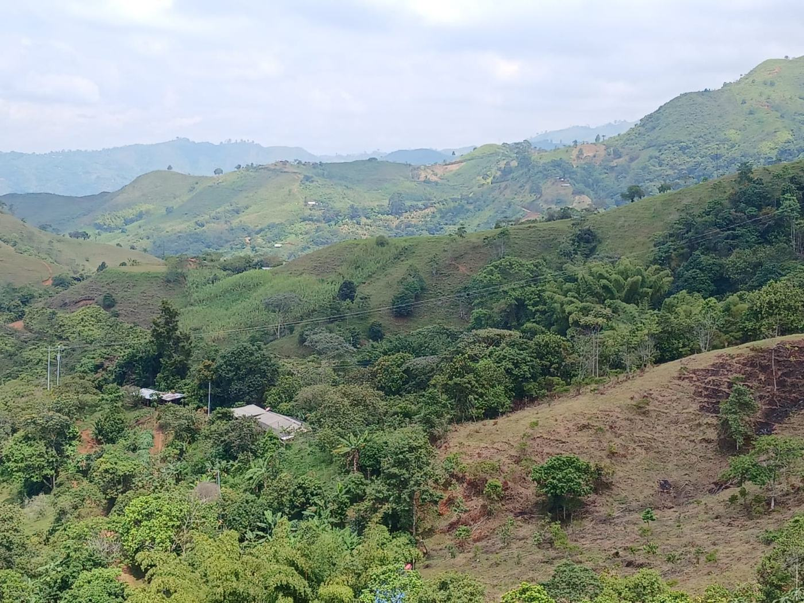
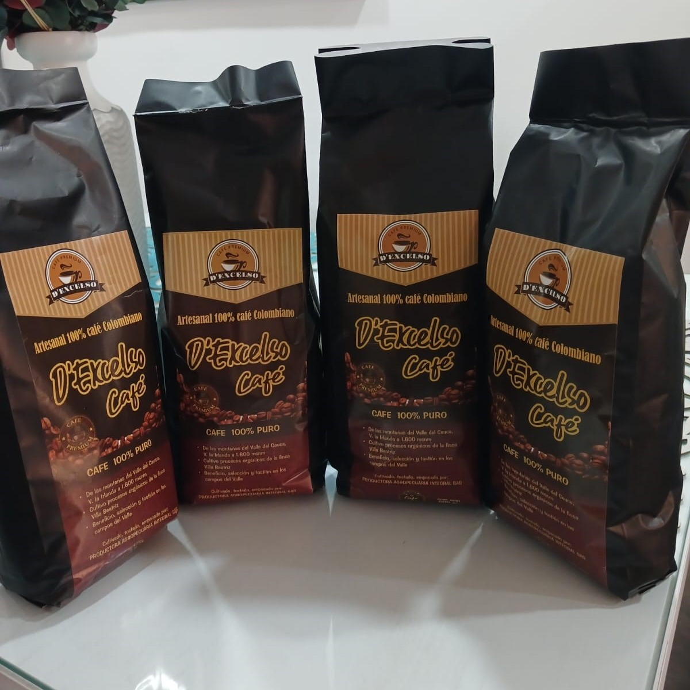
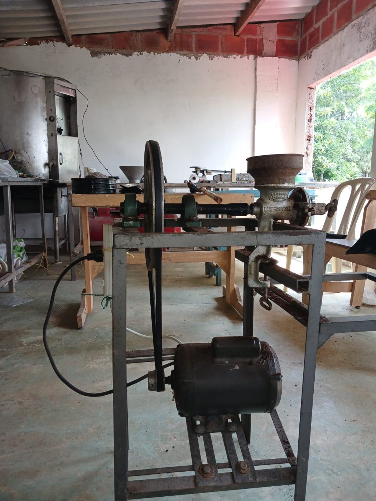
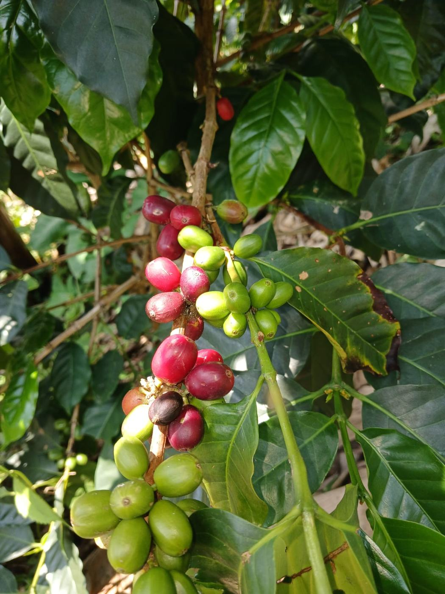
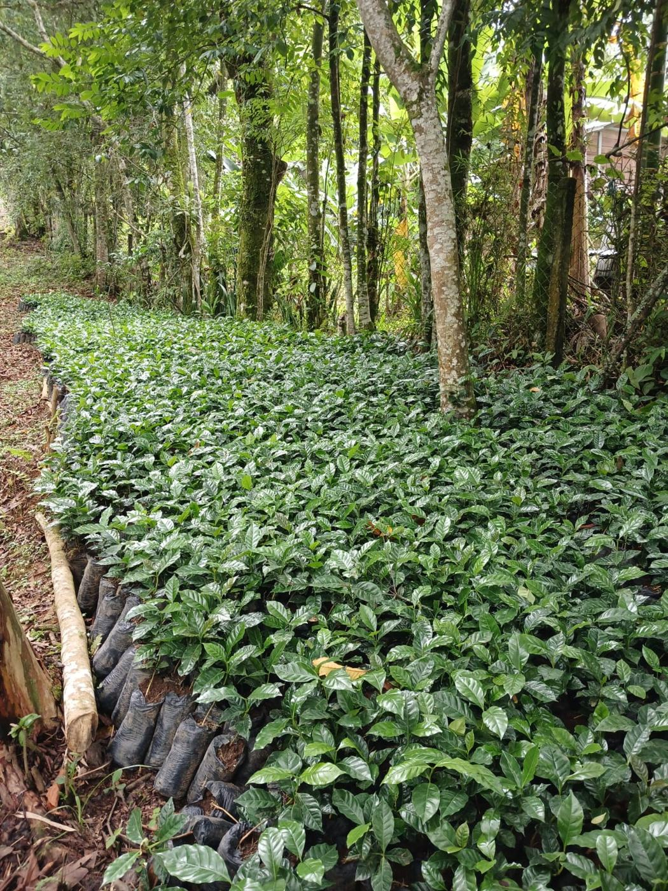
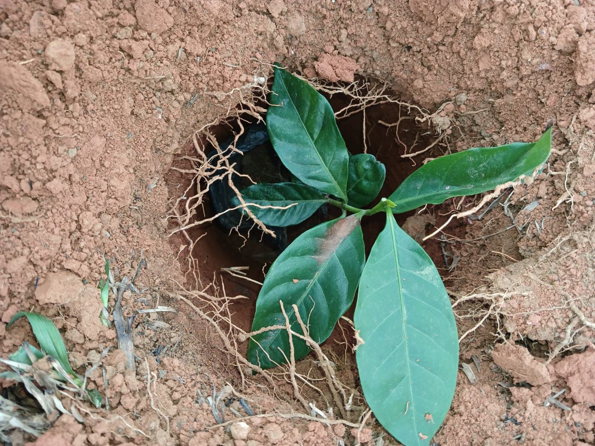
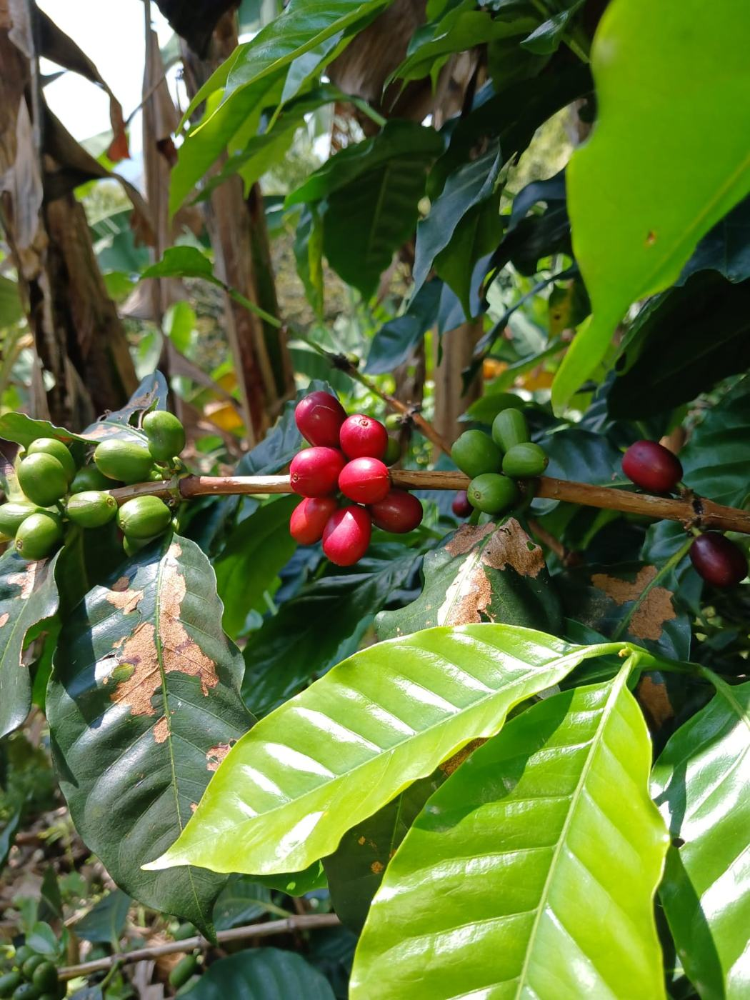
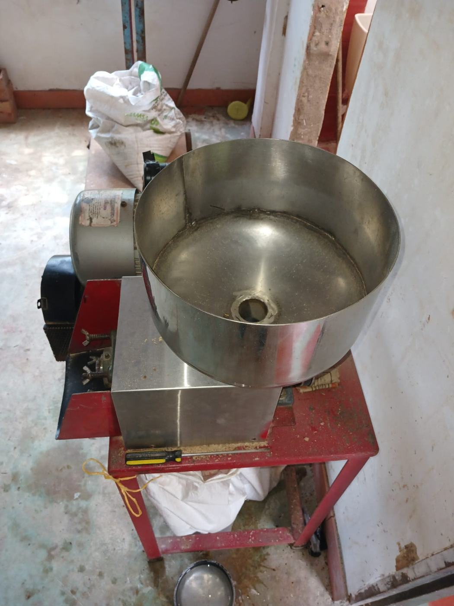

Dexcelso en grano
Tostión media. Para moler en casa justo antes de preparar y aprovechar todo el aroma.
$45.000 / libra 500 g
PedirDescubre el sabor auténtico de Colombia en cada taza.
Café 100% arábica, tostado artesanalmente, directo de nuestra tierra a tu hogar.

El sabor de un buen café no comienza en la taza, sino en la tierra donde nace.
Por eso, entender el origen y las variedades es esencial para valorar un café realmente premium. En D'Excelso, nuestro grano tiene raíces profundas: nace en la Finca Villa Hanny, ubicada en San Vicente, zona rural de Jamundí (Valle del Cauca), a más de 1.600 metros sobre el nivel del mar. Ese entorno —montañoso, fresco y privilegiado— es el que define el carácter y la calidad de nuestro café.
En las zonas altas del Valle del Cauca, la naturaleza trabaja a nuestro favor:
¿El resultado? Un café con aroma intenso, acidez brillante y un perfil sensorial más complejo, ideal para quienes disfrutan una taza equilibrada y llena de matices.
La altura de 1.600 msnm no es un dato técnico: es uno de los secretos que convierten a D'Excelso en un café de alta calidad.
En la finca se cultivan variedades arábicas cuidadosamente seleccionadas por su adaptabilidad al clima de montaña y su excelente perfil sensorial. Estas variedades destacan por:
Cada variedad aporta un toque especial que, al mezclarse con la altura, el suelo y la tostión artesanal, da vida a una taza única.
Café de altura, cultivo cuidado, selección manual y tostión artesanal… Esa es la suma que hace que cada taza de D'Excelso sea un producto honesto, premium y lleno de esencia colombiana.
Cuando eliges D'Excelso, no solo compras café: compras origen, tradición y un sabor auténticamente cultivado en las montañas del Valle del Cauca.
Saber más

De las montañas del Valle del Cauca, vereda La Irlanda. Beneficio, selección y tostión hechos en la misma finca, por la misma familia que lo siembra.
Arábica: suave, aromática y equilibrada. Presenta una acidez fina y agradable, con notas florales, frutales y achocolatadas.
Tostión media. Para moler en casa justo antes de preparar y aprovechar todo el aroma.
$45.000 / libra 500 g
Pedir
Tostión media. Molido en la finca, listo para greca, cafetera de filtro o prensa.
$45.000 / libra 500 g
Pedir
¿Tienes una tienda, un café o un restaurante? Cotiza varias libras de café de origen.
Cotiza según cantidad
CotizarProducción limitada. Tostamos en lotes pequeños cada mes y trabajamos sobre pedido. Escríbenos y te contamos qué hay disponible y cuándo sale la próxima tostión.
Todo pasa en la finca: el mismo café que sembramos es el que te llega.

Cada mata empieza en nuestro propio almácigo, bajo la sombra del bosque.

Sembramos a mano, mata por mata, en la ladera, y la cuidamos mes a mes.

Recolección manual, escogiendo únicamente los frutos en su punto.

Secado natural y selección del grano antes de pasar a la tostadora.

Tostado artesanal a gas, en lotes pequeños, para conservar aroma y sabor.
Cada bolsa se empaca a mano, en grano o molido, según tu pedido.
Entregas en Cali y Jamundí. A otras ciudades lo coordinamos contigo.
ContáctanosGranos cultivados de forma natural, respetando la tierra y conservando la pureza del café colombiano.
Tostado cuidadosamente en pequeños lotes para resaltar aroma, frescura y notas únicas.
La atención al detalle es nuestro sello. Desde la selección hasta el empaque, cada paso garantiza un café impecable.
Nuestra trayectoria combina experiencia, rigor y conocimiento para ofrecer un café con sabor profesionalmente elaborado.

El sabor de un buen café no comienza en la taza, sino en la tierra donde nace.
Leer más
Tres formas deliciosas de disfrutar D'Excelso en casa, sin ser barista.
Leer más
Una herencia que se cultiva con paciencia, respeto por la tierra y amor por el origen.
Leer másUn camino de tierra, montaña adentro, hasta los 1.600 metros de altura. Así es el recorrido de cada grano de D'Excelso antes de llegar a tu taza: cosechado a mano, con paciencia y dedicación familiar.
Quiero probarloCali, Colombia
Lunes - Viernes
09:00 AM - 6:00 PM